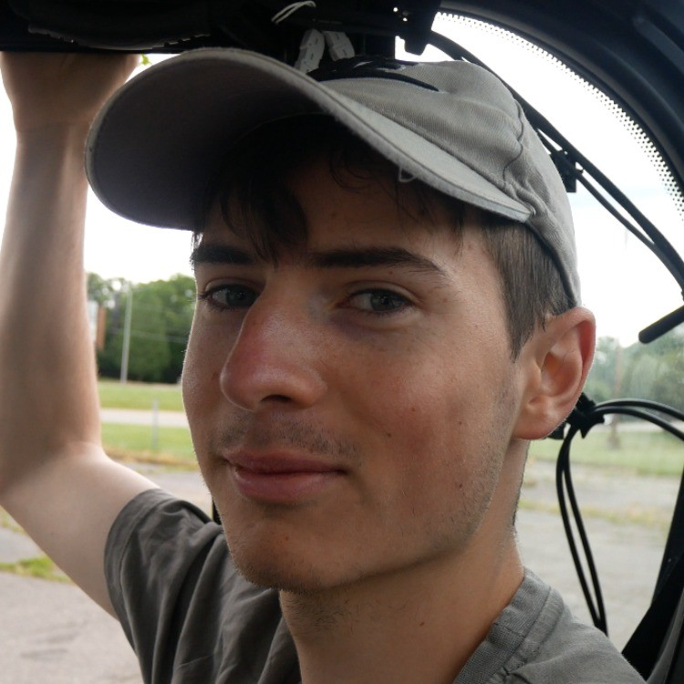

About Me
I'm a senior at the University of Minnesota Twin Cities majoring in Data Science through the College of Science and Engineering Computer Science Department. My goal is to apply my software engineering and data science knowledge to solve real-world problems while making a positive impact. I will pursue a master's degree following my graduation.
Education
University of Minnesota
Bachelor's in Data Science, Computer Science & Engineering Department
September 2021 - May 2025
GPA: 3.761 / 4.0
University of Minnesota
Masters's in Computer Science, Computer Science & Engineering Department
September 2025 - 2026
Unstarted
Relevant Courses: Software Engineering, Data Structures & Algorithms, Computer and Database Systems, Machine Learning Fundaments, Linear Algebra, Intro to AI, Data Mining, Optimization, Deep Learning, Natural Language Processing, and Computer Vision.
Skills
Experience
Undergraduate Research Intern
Minnesota Robotics Institute
Minneapolis, MN
September 2024 - December 2024
Research Intern
National Science Foundation - Lawrence Tech University & Michigan State University
Detroit, MI
May 2024 - August 2024

Projects
Motion & Mapping Lead, Micro Mouse Robot, IEEE Club
October 2024 - Present
Backend Lead, Major Planner Project, Social Coding Club
January 2024 - May 2024
Flag Guessing Web App
December 2022 - Present
Course Projects
September 2021 - Present